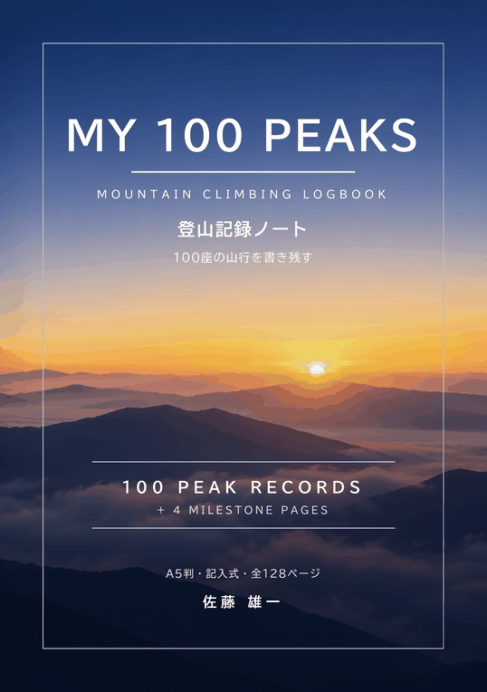

登山記録ノート
MY 100 PEAKS｜100座の山行を書き残す登山記録ノート
MY 100 PEAKS は、登った山のことを1座ごとに1ページへ書き込める、記入式の登山記録ノートです。山名・標高・登頂日から、コースタイム、歩行時間・距離・累積標高差、天気、山頂でのひとことまで、100座ぶんを1冊に書き残せます。
このノートで数える100座は、あなたが自分で選んで登った山です。どの山を数えるかは、自由に決められます。
【広告】 このページには、Amazonアソシエイトのプログラムによるアフィリエイトリンクが含まれています。

MY 100 PEAKS：登山記録ノート（100座の山行を書き残す）
1座1ページの記録欄が100ページ。登頂日・山名・標高・都道府県・同行者・天気・登山口・ルート・コースタイム・歩行時間・距離・累積標高差・山頂でのひとことなどを書き込めます。25・50・75・100座目の節目のページ、装備の記録と持ち物チェックリスト、都道府県の最高地点47のチェックリストも収録。
📖 Amazon でペーパーバックを見る2026年10月31日の時点で、Amazon での販売の開始を準備しています。販売の状況と価格は、Amazon の商品ページでご確認ください。
こんな方におすすめです
- 登った山の記録を、1冊にまとめて残しておきたい方
- コースタイムや累積標高差を、次の山行の計画の参考にしたい方
- GPS ウォッチや登山アプリの記録とは別に、手書きの記録も残したい方
- 25座・50座・100座などの節目を、ふり返りながら登りたい方
1座1ページの記録欄
- 登頂日、この山に登った回数、満足度（1〜5に丸をつける）
- 山名（よみ）、標高、都道府県、山行の形（日帰り・山小屋泊・テント泊）
- 同行者、天気・気温・風、登山口・交通・駐車場
- ルート（登り・下り）、コースタイム（地点と時刻を8行）
- 歩行時間・距離・累積標高差（GPS ウォッチや登山アプリの値を書き写せます）
- 山頂でのひとこと、花・鳥・景色、山小屋・立ち寄り湯、体調・装備のメモ、写真・メモの枠
収録内容
| 内容 | 詳細 |
|---|---|
| 使い方と記入例 | 書き方の手順と、記入例のページ |
| 登山の記録 | 100ページ。1座1ページ（No. 001〜100 を印刷） |
| 節目（MILESTONE）のページ | 4か所。25・50・75・100座目のあと |
| プロフィールと連絡先 | クライマー・プロフィール、緊急時の連絡先 |
| 装備 | 装備の記録、持ち物チェックリスト（日帰り・山小屋泊） |
| 一覧 | 登った山の一覧（PEAK INDEX）、次に登りたい山のリスト |
| 都道府県の最高地点 47 | チェックリスト。国土地理院「都道府県の最高地点」（令和7年4月1日）をもとに作成 |
| 巻末 | 山に行く前に（一般的な注意）、メモ |
この本は紙の本（A5判・128ページのペーパーバック）で、ペンで直接書き込んで使う記入式のノートです。電子書籍版はありません。本書は記録用のノートで、登山の技術を指導するものではなく、登山の安全を保証するものでもありません。
よくある質問
Q. 何座分の記録を書けますか？
A. 1座1ページの記録ページが100ページあり、100座分を書けます。25・50・75・100座目のあとには、それまでを振り返る節目（MILESTONE）のページがあります。
Q. 決まった100座の山のための記録帳ですか？
A. いいえ。このノートで数える100座は、あなたが自分で選んで登った山です。どの山を数えるかは自由に決められます。巻末には、国土地理院の資料をもとに作成した都道府県の最高地点47のチェックリストがあります。
Q. GPS ウォッチや登山アプリの記録も書けますか？
A. 歩行時間・距離・累積標高差の欄があり、GPS ウォッチや登山アプリに残った値を書き写せます。コースタイムは地点と時刻を8行まで書けます。
Q. 電子書籍版はありますか？
A. ありません。A5判・128ページの紙の本（ペーパーバック）で、ペンで直接書き込んで使う記入式のノートです。